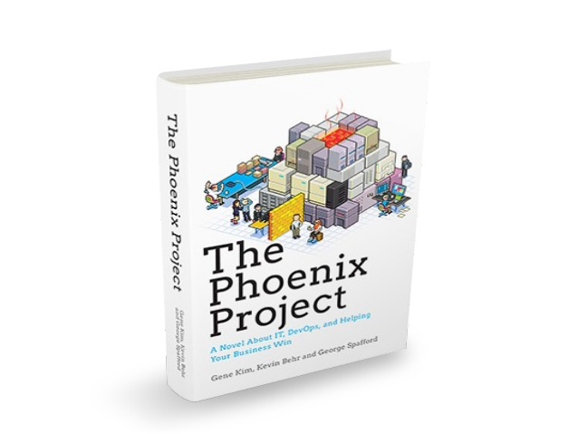
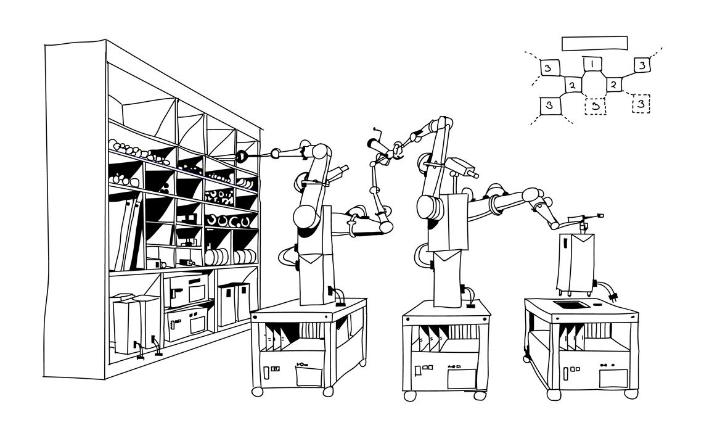

- 00 _导读 _ 什么是“The Fenix Project”？.md.html
- 00 开篇词 _ 如何构建一个可靠的分布式系统？.md.html
- 01 _ 原始分布式时代：Unix设计哲学下的服务探索.md.html
- 02 _ 单体系统时代：应用最广泛的架构风格.md.html
- 03 _ SOA时代：成功理论与失败实践.md.html
- 04 _ 微服务时代：SOA的革命者.md.html
- 05 _ 后微服务时代：跨越软件与硬件之间的界限.md.html
- 06 _ 无服务时代：“不分布式”云端系统的起点.md.html
- 07 _ 远程服务调用（上）：从本地方法到远程方法的桥梁.md.html
- 08 _ 远程服务调用（下）：如何选择适合自己的RPC框架？.md.html
- 09 _ RESTful服务（上）：从面向过程编程到面向资源编程.md.html
- 10 _ RESTful服务（下）：如何评价服务是否RESTful？.md.html
- 11 _ 本地事务如何实现原子性和持久性？.md.html
- 12 _ 本地事务如何实现隔离性？.md.html
- 13 _ 全局事务和共享事务是如何实现的？.md.html
- 14 _ 分布式事务之可靠消息队列.md.html
- 15 _ 分布式事务之TCC与SAGA.md.html
- 16 _ 域名解析系统，优化HTTP性能的第一步.md.html
- 17 _ 客户端缓存是如何帮助服务器分担流量的？.md.html
- 18 _ 传输链路，优化HTTP传输速度的小技巧.md.html
- 19 _ 如何利用内容分发网络来提高网络性能？.md.html
- 20 _ 常见的四层负载均衡的工作模式是怎样的？.md.html
- 21 _ 服务端缓存的三种属性.md.html
- 22 _ 分布式缓存如何与本地缓存配合，提高系统性能？.md.html
- 23 _ 认证：系统如何正确分辨操作用户的真实身份？.md.html
- 24 _ 授权（上）：系统如何确保授权的过程可靠？.md.html
- 25 _ 授权（下）：系统如何确保授权的结果可控？.md.html
- 26 _ 凭证：系统如何保证与用户之间的承诺是准确完整且不可抵赖的？.md.html
- 27 _ 保密：系统如何保证敏感数据无法被内外部人员窃取滥用？.md.html
- 28 _ 传输（上）：传输安全的基础，摘要、加密与签名.md.html
- 29 _ 传输（下）：数字证书与传输安全层.md.html
- 30 _ 验证：系统如何确保提交给服务的数据是安全的？.md.html
- 31 _ 分布式共识（上）：想用好分布式框架，先学会Paxos算法吧.md.html
- 32 _ 分布式共识（下）：Multi Paxos、Raft与Gossip，分布式领域的基石.md.html
- 33 _ 服务发现如何做到持续维护服务地址在动态运维中的时效性？.md.html
- 34 _ 路由凭什么作为微服务网关的基础职能？.md.html
- 35 _ 如何在客户端实现服务的负载均衡？.md.html
- 36 _ 面对程序故障，我们该做些什么？.md.html
- 37 _ 要实现某种容错策略，我们该怎么做？.md.html
- 38 _ 限流的目标与模式.md.html
- 39 _ 如何构建零信任网络安全？.md.html
- 40 _ 如何实现零信任网络下安全的服务访问？.md.html
- 41 _ 分布式架构中的可观测到底说的是什么？.md.html
- 42 _ 分析日志真的没那么简单.md.html
- 43 _ 一个完整的分布式追踪系统是什么样子的？.md.html
- 44 _ 聚合度量能给我们解决什么问题？.md.html
- 45 _ 模块导学：从微服务到云原生.md.html
- 46 _ 容器的崛起（上）：文件、访问、资源的隔离.md.html
- 47 _ 容器的崛起（下）：系统、应用、集群的封装.md.html
- 48 _ 以容器构建系统（上）：隔离与协作.md.html
- 49 _ 以容器构建系统（下）：韧性与弹性.md.html
- 50 _ 应用为中心的封装（上）：Kustomize与Helm.md.html
- 51 _ 应用为中心的封装（下）：Operator与OAM.md.html
- 52 _ Linux网络虚拟化（上）：信息是如何通过网络传输被另一个程序接收到的？.md.html
- 53 _ Linux网络虚拟化（下）：Docker所提供的容器通讯方案有哪些？.md.html
- 54 _ 容器网络与生态：与CNM竞争过后的CNI下的网络插件生态.md.html
- 55 _ 谈谈Kubernetes的存储设计理念.md.html
- 56 _ Kubernetes存储扩展架构：一个真实的存储系统如何接入或移除新存储设备？.md.html
- 57 _ Kubernetes存储生态系统：几种有代表性的CSI存储插件的实现.md.html
- 58 _ Kubernetes的资源模型与调度器设计.md.html
- 59 _ 透明通讯的涅槃（上）：通讯的成本.md.html
- 60 _ 透明通讯的涅槃（下）：控制平面与数据平面.md.html
- 61 _ 服务网格与生态：聊聊服务网格的两项标准规范.md.html
- 62 _ Fenix's Bookstore的前端工程.md.html
- 63 _ 基于Spring Boot的单体架构.md.html
- 64 _ 基于Spring Cloud的微服务架构.md.html
- 65 _ 基于Kubernetes的微服务架构.md.html
- 66 _ 基于Istio的服务网格架构.md.html
- 67 _ 基于云计算的无服务架构.md.html
- 春节特别放送（上）_ 有的放矢，事半功倍.md.html
- 春节特别放送（下）_ 积累沉淀，知行合一.md.html
- 用户故事 _ 詹应达：持续成长，不惧未来.md.html
- 结束语 _ 程序员之路.md.html
- 结课测试 _ 一套习题，测出你的掌握程度.md.html
- 捐赠
00 _导读 _ 什么是“The Fenix Project”？
你好，我是周志明。
在开篇词中，我在介绍“探索与实践”这个模块的时候，提到会带你开发不同架构的Fenix’s Bookstore。你是不是还不清楚这个项目是啥，以及为什么要做这么一个项目。所以，这一讲我要再和你说一说这门课的来源，这样你就会更清楚为什么会这么设计了。
因为我一直看重“布道与分享”对梳理、扎实知识体系的重大作用，所以便萌生了把自己这十几年软件开发工作中用到的架构知识，进行梳理，并以文字的形式分享出来的想法。于是，2019年底，我就开始了这项浩大的工程，在GitHub写了一部叫做《软件架构探索：The Fenix Project》的开源文档。
后来我又和极客时间的编辑讨论，为了让更多的开发者能从中收益，让他们可以相对轻松地跟着我一起进行这次的软件架构探索之旅，所以就再一次整理成了“图文+音频”的形式。
后面，我也会基于这个开源文档再出版一本纸质图书。如果你在这门课更新的过程中，分享了优质的留言并被课程编辑展示了出来，我也会送你一本有我亲笔签名的书。
其实，“软件架构探索”的意思是清晰的，但乍一听到“The Fenix Project”，是不是还很难判断这门课到底要做什么呢。确实如此，所以接下来，我们就先从“Phoenix”这个词说起吧。
软件架构探索
“Phoenix”的字面意思，就是“凤凰”，或者是“不死鸟”，这个词我们东方人不太常用，但它在西方的软件工程读物，尤其是关于Agile、DevOps话题的作品中经常会出现。
比如说，软件工程小说《The Phoenix Project》，就讲述了徘徊在死亡边缘的Phoenix项目，在精益方法下浴火重生的故事；马丁 · 福勒（Martin Fowler）对《Continuous Delivery》（持续交付）的诠释里，也多次提到过“Phoenix Server”（取其能够“涅槃重生”之意）与“Snowflake Server”（取其“世界上没有相同的两片雪花”之意）的优劣比对。

The Phoenix Project
也许是东西方文化差异的原因，尽管我们东方人会说“失败是成功之母”，但骨子里还是更注重一次就能把事做对、做好，尽量别出乱子；而西方人则要“更看得开”一些，把出错看作是正常、甚至是必须的发展过程，只要出了问题能够兜底，能重回正轨就好。
其实在软件工程的世界里，任何产品的研发，只要时间尺度足够长，人就总会疏忽犯错，代码就总会带有缺陷，电脑就总会宕机崩溃，网络就总会堵塞中断……
所以如果一项工程需要大量的人员共同去研发，并保证它们分布在网络中的大量服务器节点能够同时运行，那么随着项目规模的增大、运作时间变长，它必然会受到墨菲定律的无情打击。
Murphy’s Law: Anything that can go wrong will go wrong.- 墨菲定律：凡事只要有可能出错，那就一定会出错。
这样问题就来了：为了得到高质量的软件产品，我们是应该把精力更多地集中在提升每一个人员、过程、产出物的能力和质量上，还是放在整体流程和架构上？
这里我先给一个“和稀泥”式的回答：这两者都重要。前者重术，后者重道；前者更多与编码能力相关，后者更多与软件架构相关；前者主要由开发者个体水平决定，后者主要由技术决策者水平决定。
但是，我也必须要强调这个问题的另外一面：这两者的理解路径和抽象程度是不一样的。
如何学习一项具体的语言、框架、工具，比如Java、Spring、Vue.js，等等，都是相对具象的，不论其蕴含的内容多少、复杂程度的高低，它们至少是能看得见、摸得着的。
而如何学习某一种风格的架构方法，比如单体、微服务、服务网格、无服务、云原生，等等，则是相对抽象的，谈论它们可能要面临着“一百个人眼中有一百个哈姆雷特”的困境。
所以，探讨这方面的话题，要想言之有物，就不能只是单纯的经验陈述了。
那么我就想，回到这些架构根本的出发点和问题上，带你一起真正去使用这些不同风格的架构方法，来实现某些需求、解决某些问题，然后在实践中观察它们的异同优劣，这会是一种很好的，也许是最好的学习方式。
可靠的系统
我们接着前面提出的“人与系统”的探讨，再来思考一个问题：构建一个大规模但依然可靠的软件系统，是否可行？
看到这个问题，你的第一感觉可能会认为有点荒谬：废话。如果这个事情从理论上来说就根本不可能的话，那我们这些做软件开发的还在瞎忙活些什么呢？
但你再仔细想想，根据“墨菲定律”和在“大规模”这个前提下，在做软件开发时，你一定会遇到各种不靠谱的人员、代码、硬件、网络等因素。那你从中就能得出一个听起来很符合逻辑直觉的推论：如果一项工作，要经过多个“不靠谱”的过程相互协作来完成，其中的误差应该会不断地累积叠加，导致最终结果必然不能收敛稳定才对。
这个问题，也并不是杞人忧天、庸人自扰式的瞎操心，计算机之父冯 · 诺依曼（John von Neumann）在1940年代末期，就曾经花了大约两年的时间，来研究这个问题，并且得出了一门理论《自复制自动机》（Theory of Self-Reproducing Automata），这个理论以机器应该如何从基本的部件中，构造出与自身相同的另一台机器引出。
他的目的并不是想单纯地模拟或者理解生物体的自我复制，也并不是简单地想制造自我复制的计算机，而就是想回答一个理论问题：如何用一些不可靠的部件来构造出一个可靠的系统。

所以说，自复制机恰好就是一个最好的、用不可靠部件构造的可靠系统的例子。这里的“不可靠部件”，你可以理解为构成生命的大量细胞、甚至是分子。由于热力学扰动、生物复制差错等因素的干扰，这些分子本身并不可靠。
但是，生命系统之所以可靠的本质，恰恰是因为它可以使用不可靠的部件来完成遗传迭代。这其中的关键点，便是承认细胞、分子等这些零部件可能会出错，某个具体的零部件可能会崩溃消亡，但在存续生命的微生态系统中，一定会有其后代的出现，重新代替该零部件的作用，以维持系统的整体稳定。
因而，在这个微生态里，每一个部件都可以看作是一只不死鸟（Phoenix），它会老迈，而之后又能涅槃重生。
虽然几乎是在计算机诞生的同时，计算机科学家就开始研究如何构造可靠的软件系统，并且得到了“像Phoenix一样迭代的生态才是可靠的”明确的结论，但是软件架构却不是一蹴而就地直接照这个结论去设计。原因也很简单，因为软件架构有一个逐渐演进的过程。
架构的演进
软件架构风格从大型机（Mainframe），发展到了多层单体架构（Monolithic），到分布式（Distributed），到微服务（Microservices），到服务网格（Service Mesh），到无服务（Serverless）……你能发现，在技术架构上确实呈现出“从大到小”的发展趋势。
这几年微服务兴起后，出现了各类文章去总结、去赞美它的各种好处，比如简化了部署、逻辑拆分更清晰、便于技术异构、易于伸缩拓展应对更高的性能，等等。没错，这些都是微服务架构非常重要的优点，也是企业去搭建微服务的动力。
可是，如果不拘泥于特定系统或特定的某个问题，我们从更宏观的角度来看，前面所列举的这些好处，都只能算是“锦上添花”、是让系统“活得更好”的动因，肯定比不上系统如何“确保生存”的需求来得更关键、本质。
在我看来，架构演变最重要的驱动力，或者说产生这种“从大到小”趋势的最根本的驱动力，始终都是为了方便某个服务能够顺利地“死去”与“重生”而设计的。个体服务的生死更迭，是关系到整个系统能否可靠续存的关键因素。
我举个例子。假设某个企业中应用的是单体架构的Java系统，它的更新、升级都必须要有固定的停机计划，必须在特定的时间窗口内才能按时开始，而且必须按时结束。如果出现了非计划之中的宕机，那就是生产事故。
但是，软件的缺陷不会遵循领导定下的停机计划来“安排时间出错”，所以为了应对缺陷与变化，做到不停机地检修，Java曾经搞出了OSGi和JVMTI Instrumentation等这样复杂的HotSwap方案，以实现给奔跑中的汽车更换轮胎这种匪夷所思却又无可奈何的需求。
而在微服务架构的视角下，所谓的系统检修，只不过是一次在线服务更新而已，先停掉1/3的机器，升级新的软件版本，再有条不紊地导流、测试、做金丝雀发布，一切都是显得如此理所当然；而在无服务架构的视角下，我们甚至都不可能去关心服务所运行的基础设施，甚至连机器是哪台都不用知道，停机升级什么的就根本无从谈起了。
流水不腐，有老朽、有消亡、有重生、有更迭，才是正常生态的运作合理规律。
那么你来设想一下，如果你的系统中，每个部件都符合“Phoenix”的特性，哪怕其中的某些部件采用了极不靠谱的程序代码，哪怕存在严重的内存泄漏问题，最多只能服务三分钟就一定会崩溃。而即便这样，只要在整体架构设计中，有恰当的、自动化的错误熔断、服务淘汰和重建的机制，那在系统外部来观察，它在整体上仍然有可能表现出稳定和健壮的服务能力。
铺垫到这里，我就可以给你解释清楚，到底什么是“The Fenix Project”了。
为什么叫做“The Fenix Project”？
你应该也知道，在企业软件开发的历史中，当发布一项新技术的时候，常常会有伴以该技术开发的“宠物店（PetStore）”作为演示的传统（如J2EE PetStore、.NET PetShop、Spring PetClinic等）。
所以，在课程里，我在带你做不同架构风格的演示时，也希望能遵循这个传统。不过无奈的是，我从来没养过宠物，于是就改行开了书店（Fenix’s Bookstore），里面出售了几本我写过的书，算是夹带了一点私货，这样也避免了在使用素材时可能产生的版权问题。
另外，尽管我相信没有人会误解，但我还是想多强调一句，Oracle、Microsoft、Pivotal等公司设计宠物店的目的，绝不是为了日后能在网上贩卖小猫小狗，他们只是在纯粹地演示技术。
所以说，你也不要以“实现这种学生毕业设计复杂度的需求，却引入如此规模的架构或框架，纯属大炮打苍蝇，肯定是过度设计”的眼光，来看待这个“Fenix’s Bookstore”项目。
相反，如果可能的话，我会在有新的技术、框架发布出来的时候，持续更新，以恰当的形式添加到项目的不同版本中，让它的技术栈越来越复杂。我希望把这些新的、不断发展的知识，融合进已有的知识框架之中，让自己学习、理解、思考，然后将这些技术连同自己的观点看法，分享给你。
说到这儿，我和“Fenix”这个名字还有一段奇妙的缘分。在二十多年前，我就开始用“IcyFenix”这个网名了。这个名字来源于暴雪公司的即时战略游戏《星际争霸》，里面有一个Protoss（普罗托斯）英雄叫Fenix（菲尼克斯）。就像这个名字所预示的那样，Fenix曾经是Zealot（狂热者），牺牲后以Dragoon（龙骑兵）的形式重生，带领Protoss与刀锋女王Kerrigan（凯瑞甘）继续抗争。
所以，既然我们要开始一段关于“Phoenix”的代码与故事，那便叫它“The Fenix Project”，如何？
好了，现在你对这门课程的设计和讲解思路就已经非常了解了，那么，你是否也制定了一些学习计划？不妨分享出来，让我们一起开启这趟软件架构的学习之旅。
© 2019 - 2023 Liangliang Lee. Powered by gin and hexo-theme-book.